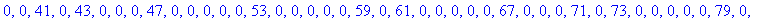
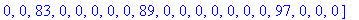
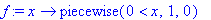

Supplement: A horizontal list of primes
See if you can analyze the following MAPLE command sequence prior to executing it. (Note that := is the standard MAPLE syntax for defining something.) Then try it to see if it does what you thought it would do.
>
for i from 1 to 100
do
if
isprime(i)=true then a[i]:=i else a[i]:=0
fi;
od;
> Primlist:=[seq(a[i],i=1..100)];


> f:=x->piecewise(x>0,1,0);

> "primes less than 100"=select(f=1,Primlist);
>
What is the function f doing?
To see this try computing some values for f (x) for different values for x, then for
general x. (eg. f(0), f(-2), f(1), etc. and finally f(x) )
Next try plotting the graph of y=f(x). Note that because we defined f as an opperation
on the variable x , sending x into something, we must include the notation
f(x) in the plot command given below.
> plot(f(x),x=-10..10,y=-2..2);
>